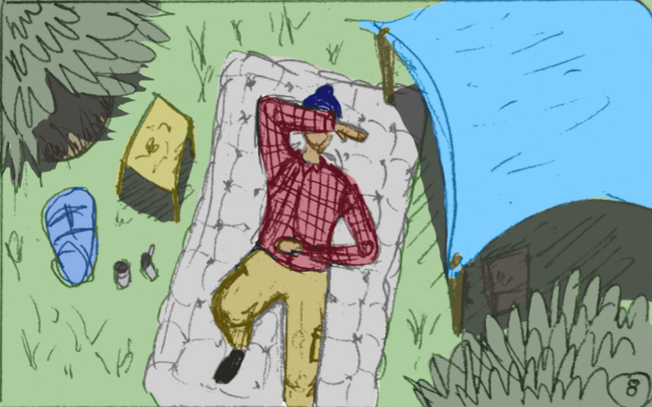

My name is Perry Meas. I am a recent graduate from University of Washington with degrees in both Human Centered Design and Engineering (HCDE) and Informatics. I am aspiring to become a game designer and storyteller that brings a holistic approach to my work, bridging principles of human-computer interaction (HCI) with user experience research and design and the visual arts to create interactive media and systems that speak to our own experiences.
I am seeking full-time positions in user experience research, user centered design, and game design. I am also an amateur voice actor and a hobby screenwriter. Please contact me if you have any questions. My email is perrylinmeas@gmail.com. You may also download my resume using the link below.
Yellow Cab Collective - Mobile Design and Prototyping
Project Type:
Mobile Design Exercise
Duration:
Spring 2015
Summary: A course exercise in redesigning the mobile application of San Francisco's taxi system. On a team of two, I served as the Project Manager and User Researcher. We used flow analysis, user research, and user personas to guide visual mockups in Sketch3 which were then ported into MarvelApp to create an interactive prototype.
Yellow Cab Collective was an exercise to redesign the user flow and interface of the current mobile application for San Francisico's taxi service, Yellow Cab Collective. This project involved elements of business and user research, web/mobile interface design, rapid prototyping, and medium-fidelity wireframing to produce an interactive prototype for the redesigned mobile interface.
My Role
I served as the project manager and user researcher for our project. My responsibilities included:
Defining project timeline and objectives
Conduct product comparative research
Facilitate user research sessions
From research, brainstorm and develop mind maps and user flows
Document design process and prepare reports on findings and progress
Present project to course instructor and simulated stakeholders
My project partner used our findings to develop sketches, wireframes, and paper prototypes. These were tested with our target audience and further developed the finalized design into a functional, high-fidelity prototype using MarvelApp.
Product Research
Yellow Cab Collective's current mobile application that suffers from major design issues. We first explored the current system to identify flaws and define shortcomings.
For example, the current system has:
A deep and complicated user-task flow (i.e four to five layers of navigation just to hail a cab ride)
Inconsistent or poor use of design elements (i.e icons were not used consistently and bloated menu functions)
Confusing or ambigious design elements (i.e swiping left or right on the screen uses the innapropriate screen swipe tranisition; form did not communicate function)
Main application functions were not contextualized to other functions and did not take advantage of business opportunities (i.e while the system has a rating system that allows users to rate their ride experience, users could not contextualize that rating to a specfic ride experience; the company missed a major opportunity for improved data analytics because riding and rating were treated as separate experinces rather than part of a unified whole)
User Research
We began this project by conducting market and user research on existing transportation services and content analysis on the mobile applications used by those services. Our user research process involved three in-depth interviews conducted with users who represent achetypical personas. These personas were used to guide our question design and subsequent analysis.
We used our research findings to identify a series of common themes that our target audience embodies. From these themes we then develop a design specification which would then be used to guide the creation of iterative prototypes. These themes included:
Safety - Participants from all three persona groups informed us that safety (guarantee that no harm will be done to them when riding in a taxi or rideshare service) was a major concern. When using a rideshare or carpool service, participants first needed to feel safe in the presence of potential passengers before deciding whether or not to use that service.
Trust - Closely related to safety is trust. Participants not only need to know that no harm will be done to them, they also expect drivers to be knowledgeable and experienced. Participants were concerned over the potentiality that a taxi or rideshare driver may take longer or more inconvenient routes to unfairly increase fare.
Convenience - In addition to the utility afforded by a transportation service, convenience suggests minimal interaction to operate the application. The application needs to support simple quick decision making. Convenience also takes the form of additional controls and settings that users can modify to their preference. These controls support users’ experiences when using the application.
Awareness - Participants wanted to know who their drivers were as well as when they would be arriving. Many also sought fare estimation in addition to knowing when their taxi would arrive or be on time. Awareness also seeks to mitigate confusion and ambiguity users may face when looking for a taxi cab. Thus, our application was designed with awareness in mind.
We created a design requirements list from our four themes
Design Process
Once we had our requirements established, we could then create prototype sketches and wireframes as well as user-flow diagrams to map out the flow of the final design:
User-flow diagram outlines general process and steps each user takes
Early interface sketches and brainstorms
Low-fidelity paper prototypes were used to test our flow
Final mockups are based on sketches and prototypes
Prototype and Presentation
After the design was complete, we then created a high-fidelity, functional prototype using MarvelApp.
At the end of the course, we conducted a presentation to the class. Below is our presentation video for the project:
Never Alone Control Scheme
Project Type:
Interaction Design Mockup
Duration:
Spring 2015
Summary: An exercise to envision a revised control scheme for players of the 2014 game, Never Alone, who have motor impairments associated with Parkinsons's Disease. I served as an Interaction Designer and Researcher. This project used existing research on interaction design for users with motor impairments to guide many of our design decisions. It gave us an opportunity to consider a user group normally overlooked in commercial interaction design.
The Problem
Video games that require quick, complex movements with a keyboard and mouse or other type of controller are often inaccssible for players with motor impairments. For a class in interaction design, a group of three classmates and I designed a revised control scheme for the 2014 game, Never Alone, for players with motor impairments associated with Parkinsons's Disease.
My Role
As an interaction designer and researcher, I worked primarily on prototype sketches, brainstorming of the control schemes using affinity diagramming, content analysis, and existing usability research, and the writing of project documentation
Research Activities and Findings
In the early stage of the project, we explored existing research on interaction design solutions for people with motor impairments. These impairments result from mechanical or motor-neuron diseases that limit peoples' degrees of movement, hand-eye coordination accurace, and speed. Most people with impairments rely on simplified interpretations of an existing interface to interact with touch-based systems. This means larger touch areas and buttons that increase the probability that a user will select the correct one. Styluses are also used to aid in acquisition of on-screen targets. In many of the papers and design studies we read, the common theme was to simplify interfaces with enlarged target areas that controlled basic functions. Our main consideration was Fitts' Law, motivated our using large touch areas to reduce the amount of time and effort it takes for players with limited mobility to acquire and reach such controls.
We took these prior findings and attempted to adapt them to Never Alone's PC control scheme:
Design Solution
From consulting secondary research, our design solution took the form of a video prototype and visual mockup created in InvisionApp using a tablet and stylus with an additional four button control pad as the hardware. The stylus controller is intended to allow the player to have steady control over interactions with less strain on their muscles.
The tablet controller with stylus uses large touch zones to direct movement such as running and jumping. These large zones make it easier for players with Parkinson's Disease or other fine motor impairments to reach control targets without the need for precision and muscle strain. The four button control pad is used for context specific controls such as ducking and covering and activating game menus. The pad, which uses a smartphone for the mockup, also uses large targets under the same principles as the tablet. Players can press buttons using their preferred hand with less precision and effort.
Examples of the controls we designed the with an accompanying animation and video can be seen below:
Demonstration of the directional Movement controls. Players can drag and point with the stypus to any one of the four edges of the control pad to move the character left, right, up, and down.
Demonstration of Jumping. Tapping on the control pad with the stylus will cause the player to jump. The four corners of the pad are also used to allow the player to jump in a horizontal direction.
Demonstration of the Bola Charge + Throw. Players can throw a slingshot projectile by using the 'V' shaped Charge gesture followed by a directional drag and point to Throw the projectile in any direction.
The full set of video prototypes intended to capture the general concept of our interaction scheme are as seen below:
iMed REMIND - Patient-Centered Design Research for Group Health Research Institute
Project Type:
User Experience Research and Design for Medical Systems
Duration:
Summer 2015
Summary: A design research project to create an improved patient-facing, web-based healthcare management system. Over the summer of 2015, I worked as a User Experience Design and Research Intern for Group Health Research Institute and the UW Information School. The results of this project were published and presented to the American Medical Informatics Association.
In summer of 2015, I worked as a user experience research and design intern for iMed's REMIND Project, a joint-project between Group Health Research Institute (GHRI) and the UW iSchool iMed Research Group. The REMIND Project focused on using patient-centered design to produce a front-facing application intending to help Group Health patients better-manage their healthcare. This application is a redesign of Group Health's existing patient portal, MyGroupHealth. This project involved a team of UW undergraduate and PhD students, UW faculty, and Group Health medical professionals.
The Problem
Patients who manage chronic illness (such as those with diabtetes and motor-impairments) have difficulty navigating web-based care management systems because of poor design and complex user flows. Using these systems, both mobile and web, require major time committment and effort, which discourages usage and care management. Also, existing systems were historically designed to meet medical service providers' business and operational needs rather than patients'. As such, features may be burried in complex user flows and use unfriendly language for medical patients.
iMed aims to redesign such a system to be more patient-centered, to give patients a sense of control over their care and their health.
My Role
For this project, my primary responsibilities as a user experience design and research intern was to develop mockups and prototypes for a system serving our core users: medical patients managing chronic illness. I was to use existing research on patient-centered interaction design to help design and plan a research study to evaluate the designs I created. During research sessions, I both facilitated participants and took notes. I would then use the detailed information gathered from interviews to make changes to the design and test again until we reach data saturation. We would document our findings in a final report as well.
Initial Research
As a new member on this project, I reviewed existing literature on designing for medical patients and reviewed requirements gathered during the project's previous year. I also met with the Group Health medical staff to understand their perspective and stakes in the project. I took careful notes of important principles and requirements during my initial research.
Once I was up-to-speed with the project, I immediately switch to conducting UX design work. My first step was to outline a basic user-flow for the application, keeping in mind the high-level functions the applications needs to support.
Rapid Prototyping
I then created low-fidelity prototype sketches of the redesigned interface.
The low-fidelity sketches I created were then iterated upon and adapted into digital mockups.
Once the mockups were created, my partners and I conducted live prototype usability tests with real patients from a diverse cohort to test and evaluate the efficacy of our designs. These tests consisted of scenario-based tasks and semi-structured interviews to elicit feedback on the design. The participants' ability to complete the task using our design was the benchmark in which our design was evaluated. The semi-structured interview portion was used to give participants time and flexibility to reflect on the task and design. Study participants provided great feedback on our first prototype and allowed us to identify where our design failed to meet their needs. We produced two more prototypes and conducted many more studies till we produced a final design. The evolution of the design is as follows:
Results and Findings
In early iterations of the prototype, many patients we interviewed had difficulty completing our task-based usability scenarios. These scenarios involved anything ranging from sending a message to their care provider, to checking the instructions of a specific medication. Patients were also instrumental in identifying langauge used in the prototype that did not match their mental model.
For example, in one usability scenario, patients were asked to use the prototyped system to locate their past medical test results. In early prototypes, this information lived in the section labeled "Tests and Care". Many patients found this labeling to be vague, and we changed "Tests and Care" to "Care History". After this change among others, we noticed a measurable increase in task completion.
Overall, patients found our prototype's simple design to be a refreshing change from complex or poorly designed existing systems. Instead of a bloated web page or portal, we presented an interface which used clear language and large, simple buttons and click areas for patients to identify and navigate to.
By the project's end we synthesized our findings in a paper published and presented with the American Medical Informatics Association. Group Health's engineering team also incorporated our findings into the next iteration of the design of their patient-facing care management system which continues today.
Reflections
iMed REMIND was a wonderful exercise in both user research and design. I worked in every facet of the design process, not only doing researh and design, but also working on a team of fellow students and faculty, as well as domain professionals. It proved to me that I am capable as both a researcher and designer; that I have a set of well-rounded skills; that I have the flexibility to comfortably engage at every level of a design process.
PILLars of Unity: A Two-Player Virtual Reality Collaborative Puzzle Game for the 2015 Seattle Virtual Reality Hackathon
Project Type:
Virtual Reality Game Development
Duration:
2 Days, Autumn 2015
Summary: A two-player virtual reality collaborative puzzle game built in Unity3D during the 2015 Seattle Virtual Reality Hackathon. On a team of nine, I served as an Experience Designer, Level Designer, and User Researcher. For our work, we earned Second Place for Best in the Show.
PILLars of Unity was a two-player collaborative virtual reality puzzle game prototyped at the 2015 Seattle Virtual Reality Hackathon. The objective of the game was to encourage players to communicate effectively to succeed. Two players with VR headsets had to navigate puzzles in which one player could see game elements that the other could not and vice versa. On this project, I served as a game mehcanic and level designer on a team of nine. Among my team members were my good colleagues Max Schreiber, one of our Unity3D developers and artists, and Eva Horeth, who worked with me as a mechanic and level designer. Together, the nine of us would put together a prototype of a novel virtual reality experience within 24 hours.
My Role
As a level and game designer, I worked with Eva to develop the main mechanics as well as the layout of each stage. Designs evolved from a short list of brainstormed requirements, into 2D sketches and mockups, and then the final 3D design built in Unity3D. I helped monitor the level design process in Unity as the developers went forward in the design. I advised our developers on the placement of certain assets or details in the game world. Toward the end of the project, ideally, Eva and I would also try and conduct playtest studies to evaluate our design.
Design Activities
We generated as many ideas on stickynotes and selected which ideas, themes, or features we could adapt into the game.
Once we had the general concept of the game on paper, Eva and I used whiteboarding to visualize the puzzle and level designs.
Players would navigate mazes and labrynths and activate color-coded switches and buttons that would help advance them to the next stage. All the while, players would help guide one another when they come across different obstacles that only they could see.
Our first level created for the demo.
The layout of the puzzle. The red player can see the path for the blue player to reach the other side of the stage.
Once levels were designed and the main game mechanics were implemented, had a little time left to condut playtesting with other hackathon attendees. I helped facilitate these playtest sessions and made note of player difficulties and bugs, which would then be addressed as quickly as possible in then next build.
With the time reamining, we got feedback from four participants, two adults and two children. One of the adults and the two children only had limited experience with the Oculus system. These participants certainly struggled learning how to move in the VR environment using the headset and two controllers. We hadn't designed any cues or hints within the game, hoping that the first level was simple enough to understand. While we didn't have time to design the game to be as learnable as possible, I can imagine how to address these issues in future projects through visual or audio cues and effective game design that allows players to explore different options and interactions so that they may learn them.
The hackathon judges liked our concept and prototype though. The themes of collaborative puzzle solving resonated with them, and reminded some people of another VR puzzle game called Keep Talking and Nobody Explodes (KTNE). In KTNE, one player with a VR headset has to diffuse a virtual bomb following the instructions read aloud to them by other players. Players win the game by successfully communicating instructions and cues to diffuse the bomb. PILLars sought to do a similar thing with the theme of communicating visual cues together with another player in the virtual environment. For all of PILLar's flaws, my team and I earned 2nd Place for Best in the Show. Our project was also briefly mentioned in Geekwire.
PESTO (Promoting Education Styles Through Organization) Video Prototype
Project Type:
Web Interface Prototyping
Date:
Autumn 2015
Summary: PESTO (Promoting Education Styles Through Organization) is an imagined tool for helping students find learning resources aggregated across the internet. We conducted short surveys and interviews with current students to guide our design. This was an exercise in using video to demonstrate a prototyped web interface design. On a team of three, I served as a User Experience Designer and User Researcher. I also performed video editing and narration.
The PESTO Database (Promoting Education Styles Through Organization) is a web application mockup designed to aggregate learning resources from across the internet in an open online community. My team and I designed PESTO to allow students who have different learning styles (visual, kinesthetic, and auditory) to find all the resources the need within one convenient space. Our user research in this domain identified that students often have difficulty finding the resources they need, which are often spread across many websites and online resources. The site intends to be a one-stop-shop for video, textual, and practiced-based resources.
I worked on a team of three including myself to conduct user research by the means of a survey and focused short interviews; develop the user flow of PESTO using user-flow diagrams; sketch low-fidelity prototypes of the system; test the system in paper prototype sessions; and then design different screens of the medium-fidelity mockup. PESTO was designed solely as a mockup and is a non-functional website. However, we created a video prototype to simulate a typical interaction with PESTO from the perspective of three different user personas. The video can be viewed below:
Fragments: A Virtual Reality Adventure Into an Experience With Anxiety
Project Type:
Virtual Reality Game Development
Duration:
6 Months, Winter-Spring 2016
Summary: A virtual reality story-driven puzzle game built in Unity3D to represent the experiences of a person experiencing a severe anxiety disorder. On a team of five, I served as an Experience Designer, Level Designer, and User Researcher. I also contributed to the project's writing.
Fragments is my Human Centered Design and Engineering (HCDE) 2016 senior capstone that used the HTC Vive virtual reality system to simulate the symptoms and experiences of a severe anxiety disorder through a fantaasy puzzle adventure narrative. Players will inhabit the mind of a person experiencing anxiety and solve a series of puzzles and mazes to piece together a fragmented memory and uncover the story.
Trailer
Background
The experience of generalized anxiety disorder (GAD) is often stigmatized and misunderstood by those without anxiety. Further, there are few interactive media forms that focus on themes of anxiety. Of those that do, the vast majority are intended to induce anxiety and provide shock-value without representing an overcoming of such experiences. Fragments uses the HTC Vive Virtual Reality Headset as an exploratory medium for representing a fictional experience through anxiety. Using dramatic storytelling, domain research, and principles of immersion, we aim to present a positive, fantasy adventure about a personal experience of overcoming anxiety. Fragments will simulate symptoms of anxiety to help those without anxiety understand these experiences as well as critique the stigma toward anxiety. Our audience will be traversing a world rife in metaphor and symbolism that will encourage those with or without anxiety to discuss together.
Project Team and My Role
Five students across both the University of Washington Human Centered Design and Engineering (HCDE) and Informatics majors were involved in the creation of Fragments. I served as the project's level designer and user experience researcher. I also worked on the project's writing (narrative) and mechanics with other designers and engineers.
Research and Design
We consulted existing research into experiences of people with severe anxiety disorders. These experiences include both symptoms of anxiety and the conditions and stigmas faced by those with anxiety.
Symptoms include:
Tunnel vision
Shortness of breath
Severe panic attacks
Rapid heartrate
Negative or intrusive thoughts and worrying
Meanwhile, stigmas take the form of common cultural language and norms used to discourage those with anxiety from seeking help or the medical attention they need. Often those with anxiety are told to "not worry" or are criticized as "overreacting". Often is the case that it is those who do not understand the nature of anxiety disorders that use such language.
During our design process, we brainstormed ways we could simulate such experiences. Fragments would use virtual reality and immersive audio to simulate these experiences as players progress through the story. The character they inhabit will face such challenges such as unhelpful disembodied voices and inhibitions to sight and sound.
We also looked at existing games for inspiration on the topic of mental health and anxiety. Unfortunately, many existing games are often horror games intended to trigger feelings of anxiety rather than address those feelings. Games like Amnesia: The Dark Descent offer a wealth of inspirations for representing anxiety and fear through visual and audio mechanics and cues (blurred vision, eerie sounds, and hallucinations), but the game overall is a horror experience unsuitable for those with severe anxiety disorders. Further, the game itself is a story cemented in horror themes rather than themes of addressing and discussing the experiences of anxiety. Thus, we wanted Fragments to be a positive non-horror, mystery, puzzle-based
We also looked for stylistic inspirations from games such as Journey, which we valued for its art style and emotionally-tinged but soft and approachable mood.
In Fragments, players solve room-based puzzles to advance through the world. Players will collect crystal fragments representing shattered memories and use these fragments to activate doors and objects. Upon completing puzzles, players would be treated to cutscenes and other plot elements that help reveal the story. Virtual objects can be manipulated using the Vive controllers in relative space.
Players will use the Vive controllers for movement by means of the directional pad, interacting with objects and the user interface, and use and activate powers and abilities necessary for advancing through the game. The controllers are represented in-world as a magic flashlgiht that helps players navigate dark spaces and activate special objects just by shining a light upon them.
Players will avoid obstacles and enemies that trigger panic attacks akin to real anxiety symptoms in the player's character. Upon reaching the maximum amount of anxiety, player's vision will black out and the game will reset at a checkpoint.
Concept Pitch Video
Concept Art
I created a handful of concept illustrations (storyboards and sketches) to brainstorm the mood, environment, key moments, and scenes of Fragments. A small sample can be seen below:
The shadow of the player symbolically fills an arangement of crystal fragments.
Early landscape view.
Early depiction of a monster encounter.
Sunset atmospheric looking out from an interior.
Development
We first created testbed prototypes in Unity and C# to proof level designs and game mechanics. Testing was done with the Vive system. We used both custom and public assets to construct the environment. As a level designer, I created sketches of puzzles and rooms. I also prototyped and developed mood-establishing environments such as wide outdoor vistas and narrow cooridors. On occasion, we would create early level and puzzle designs on our team's minecraft server.
As we neared our deadline, we continued to incrementally add and test new features and mechanics as a way to pace our development. Each week was focused on different aspects of the experience.
Fragments was finished in May 2016 and presented at both the Informatics and Human Centered Design Design and Engineering capstones.
Screenshots
Fragments adopted a low-poly art style to save time on design and resources, but to also express the game's fantasy setting and positive mood and atmosphere approach it takes to dealing with the topic of anxiety and mental health. Here are two screenshots of the interior environment of one of the puzzles.
Exposure: A 3D Interactive Narrative About Homelessness
Project Type:
Unity Interactive Narrative Development
Duration:
6 Months, Winter-Spring 2016
Summary: An interactive narrative built in Unity3D to represent the stories and experiences of Seattle's young homeless population. On a team of four, I served as the Project Manager, Experience Designer, and Writer. For our work, my team won the Information School 2016 Capstone Diversity Award for using software in a creative way that aims to address issues of inclusion and justice.
What is Exposure?
Exposure was my Informatics 2016 capstone project that used interactive digital storytelling to represent the experiences of homeless youth around the University of Washington. It [Exposure] took the form of a third-person roleplaying narrative that allowed an audience of University of Washington students to step into the shoes of a fictional homeless young person. Seattle’s young homeless population has long been underrepresented—their stories are largely absent from public conscious. In the University District, young people often face discrimination, stereotypes, and violence from University of Washington students rooted in unaccountable misperceptions. The audience interacts with a cast of characters within vignettes based upon stories curated through community-grounded research.
Project Goals
By exposing our audience to this community, students were encouraged to confront prevailing misperceptions of young people, develop empathy for them, and engage with movements addressing causes of homelessness. Just as film and literature can communicate lived experiences and motivate social change, the use of an interactive medium would be a novel approach to represent a community long neglected. The goal of this project was to create a proof-of-concept demo within six months of the inital project start date to showcase the opportunities interactive stories present for motivating social change. We aimed to have an demonstratable vision for a narrative and interactive gameplay.
Below is the trailer for Exposure created using in-game and live-action footage.
Inspirations
One of our key inspirations was Brandon Stanton's acclaimed blog series, Humans of New York (HONY). Stanton captured snapshots of everyday people living in New York City and often attributed a small story or vingette of their experiences. Humans of New York was noted to inspire its audience to step into shoes and empathize with the experiences of people they would otherwise never interact with. In some cases, HONY has inspired social fundraising campaigns to support people and communities in need.
In Seattle, a similar blog called Facing Homelessness is run by Rex Hohlbein, a local architecht and activist. Facing Homelessness has similar goals as HONY: to represent the stories and experiences of people experienceing homelessness in the greater Seattle area and inspire empathy and respect toward this community. Hohlbein and his small team gather stories from people living on the streets and share them on Facebook and other social media sites. Exposure's goal inspired by HONY and Facing Homelessness: to encourage empathy through storytelling that motivates social engagement and change by representing the experiences of others normally ignored or forgetten in the public eye.
Why a Game?
According to cognitive psychologist Jim Gee, comprehension of complex ideas is grounded in perceptual simulations people are capable of running in their minds. Interactive visual media like games can aid us in forming those perceptions by providing us a visual-interactive framework by which to base those simulations on. As someone who is interested in using games to tell stories that discuss and challenge ongoing social issues, games provide a unique opportunity to allow its audience to step into the narrative shoes and experiences of others.
Story-driven games such as Life is Strange incorporate themes such as bullying, domestic violence, drug addiction, and sexual assault into its overaching narrative, but are not the main focus of the story. There are games such as Spent that attempt to simulate the experiences of homelessness to their audience. Spent's gameplay simulates financial management in difficult circumstances as a way to show how people may enter homelessness. However, Spent does not use visual representations of homelessness or portray characters experiencing homelessness for the audience to connect with. The game was instead criticized for being a game of money management rather than about other challenges and barriers associated with homelessness such as domestic violence, drug abuse, and gender and racial discrimination.
We Are Chicago is an upcoming story-driven, Telltale-style game set in the African American community living in South Side, Chicago during the 1980s and 90s. It's developer, Culture Shock Games, conducted extensive interviews with people living in South Side to currate experiences by which to understand the experiences of African Americans living in South Side and develop a compelling and respectful story from those experiences. It aims to tell stories of this community during the height of intense crime, poverty, institutional racism, and unrest that lives on today. We Are Chicago not only aims to engender empathy within its audience but also encourage them to engage with current initiatives to combat crime and poverty in South Side. Culture Shock Games plans on donating a percentage of revenue to community groups and services in South Side. My team and I look to We Are Chicago as a potential model for interactive, narrative-driven games for social engagement. It uses community-grounded research to better represent its subjects in an interactive, visual medium that allows players to step into the shoes of others.
Project Team and My Role
To create Exposure, I worked as the project manager with three other core team members (two developers and one user experience designer). We were also joined by two volunteer 3D modelers, friends who helped us create custom character models and assets. As the project manager, I set my team's weekly agenda and worked with my team members to define the project's scope and key milestones. I also served as the creative director and game designer, looking into what 3D engine, mechanics, and assets were needed.
At the beginning of the project, we experimiented with different systems for task management and communication. We experimented with Trello, Slack, and Asana beofre settling on Asana for it's great user interface and simple to read and responsive task lists. Asana allowed us to list all the features and functions we wanted to incorporate into Exposure and check each off upon completion.
Community-Grounded Research
To create an accurate story that respects the experiences and struggles faced by young homeless people, we conducted community-grounded research as a understand their community and know how they want to be portrayed. By meeting with community leaders, speaking with secondary ethnographic researchers, and volunteering at local community service shelters, we had a framework by which to create a series of vingettes of key experiences and a fictional narrative with a full cast of well-representative characters across many backgrounds. We even met with Rex from Facing Homelessness to understand his work as a third party source for currated stories.
Through our research, we learned about factors that drive young people into homelessness, wether it be family violence and discrimination against sexual orientation or multigenerational poverty and inadequate mental healthcare. We learned about day-to-day street interactions that young people on the streets face such as physical violence from pedestrians, intimidation from the police, sexual abuse, and casual street harassment. We learned that cellphones, smartphones, and music were important elements of young homeless peoples' lives, allowing them to stay connected with each other, structure their daily activites, find entertainment, and most importantly relax during times of stress.
Our findings are represented in Exposure through in-world events, landmarks, interactions, and mechanics. Critical events and plot points draw from the stories of real people. Players use an in-world smartphone to listen to music, check reminders (quests) on ongoing storylines, among other things. Characters will have their mood affected by episodes of violence or street harassment. Important community hubs in the fictional world of Exposure would be based off of real feedback from the community.
The community itself, being made up of young people who have experience playing video games, was very interested and excited to hear how a story of people like them could be told through an interactive medium.
Design and Development Process
Interaction Design
Exposure is built as a third-person adventure-style roleplaying narrative where the audience takes the role of one of many fictional characters experiencing homelessness. Because it is a PC game, we looked to game industry standards for third-person controls. This means 'W A S D' for movement and the use of a mouse for a camera pan. We modeled Exposure on the controls of successful games like Metal Gear Solid: The Phantom Pain and Life is Strange, both of which use this scheme. Using existing standards for game controls helped us save time in deciding on interaction mechanics.
Drawing from our research findings, we designed the in-game smartphone as a menu and hub for players to manage the aformentioned features (reminders, music, map, etc). Non-player characters (NPCs) in the narrative such as pedestrians, police officers, or other people living on the streets can either ignore, verbally harass, or support the player character as they travel through the environment. If a player character's mood becomes too low, they may suffer from debilitating anxiety which affects how they interact with other characters or severely hinder their progress in the story.
Players can also use an in-game corner minimap to check where story objectives and interactive events are.
Character Design
Characters were designed to reflect the diversity of the youth community. The conceptual plan called for characters who represented different ethnic groups and abilities. We sought to develop characters with both visibile and invisible disabilities but time constraints only allowed us to focus on African American, Latino, and Navtive American characters, groups which compose a large fraction of the youth population in Seattle. Clothing and color schemes of different characters harken back to the creativity and electic style and fashion worn by local residents.
Characters representing different race and ability
Static images and color guides assisted modeling and animation
Concept Artwork and Design
I worked on illustrations that sought to capture the mood/tone, look, and feel of Exposure. Much of this exporatory concept work was organized into an Invision Moodboard which can be seen here

Detailed storyboards and medium-fidelity frames from conceptual animated cutscenes were created to bring Exposure as close to a real visual narrative experience as possible.
I used Sketch3 to create mockups of in-game menus, title screens, and character selection menus.
We also created functional mockups to familiarize ourselves with Unity's functions and features, as well as prototype and test out our desired mechanics and features.
Testing and Design Evaluation
Concept artwork, paper and medium-fidelity prototypes, and functional mockups were used early user studies with student participants to evaluate the usability of our interface and interactions. We tested with a small sample of both experienced and inexperienced video game players. The results from five brief studies allowed us to make positive changes to the in-game interface and interaction design.
The senstivity of the mouse-controlled free-view camera was reduced after players reported that it was too fast and disorienting. We were able to identify bugs in the dialogue and quest systems and correct those immediately. Areas of the map where geometry caused performance problems were fixed. Players were also looking for cues to inform them they could interact with certain objects in the world. Minimap icons were enlarged after others had issues finding locations on the map.
Unity Development
After we knew what story elements, mechanics, and features we would be building into the story, my two developers and I began the development phase of Exposure in Unity3D. We began by taking what we learned from experimenting in our prototype environment and implementing them into a master build. We began with character controls and then built an early version of the in-world environment for players to roam around.
We reached out to community-made prefabricated objects and assets available to us on the Unity Store. Dragging and dropping ready-made buildings, trees, roads, and objects simplified an otherwise daunting task of populating our fictional world with life and scenery.
Scripts allowed us to create mechanics and functions such as menus and a system to track the mood and wellbeing of the player character. With the clock ticking to capstone and our limited experience with Unity and C# as a whole, our code was not the best optimized or elegantly planned. We traded immediate functionality over elegance and efficiency. This was of course a proof-of-concept. Thankfully, Unity and Exposure itself was light enough as an engine to run smoothly even on a Macbook Pro 2014.
In the final stages of development, I took it upon myself to create a brief storyboard for a cutscene to serve as an introduction to the main storyline. I then added music, voice acting, and sound effects to the scene and compiled it into a video. By this time, capstone was only a day away and I could not integrate it into Unity in time for the release. It instead lived on as a Youtube video for others to view separately.
Challenges
Early in the project, we struggled with what Exposure wanted to be. The idea of creating a game, an interactive narrative, was unheard of in our capstone class. With only six months to begin and complete capstone, tt was easy to see how daunting a task of creating a functional game was when the industry, rife with competition, would see hundreds of games fail to turn success every year. None of us knew at first how to even start Unity, let alone create C# scripts and integrate custom character models. Further, it was unclear how such an interactive story could immediately benefit or serve a cause that demands immediacy. Exposure could have been a mobile application or a website redesign, SEO, and content strategy project for a local service organiation. When discussing our goals, I told my team we wanted to do something novel and unique, to use information and stories of experiences told through interactivity as a way to speak to the experiences of others. Exposure at it's core was an exploration of possibilities, of potential, in a time when the demand for games with similar themes is on the rise. Knowing this helped us focus on the project at hand and feel confident in ourselves to create a piece of interactive software that can be more than just an artpiece for a portfolio.
Later in the project, we realized that there wasn't enough time to implement every feature and detail we hopped for. I immediately made cuts to things like multiple open-world environments and dialogue options. Being a proof-of-concept, we didn't need those additional features, but it would have been nice.
Results
Exposure had a functional demo by May 26th, 2016. We were able to finish one open world environment with a small set of custom character models, a collection of community-developed prefabs, and a library's worth of poorly optimized scripts and code. There were two small quests, music to play, NPCs to run into, and even a mock cutscene.
For our work, my team won the Information School 2016 Capstone Diversity Award for using software in a creative way that aims to address issues of inclusion and justice.
Reflections
To me, Exposure was a proof of concept that games can be a great medium for expression of political and social views. If there was more time to put into it, the story would have an immense amount of visual and narrative polish. There could have been more susbtantial quests and story elements incorporated into the demo, and fully-voiced dialogue was not far from being an option.
Further, I feel that it would be important for future games and stories about the experiences of people outside of my own experiences to include said people directly in the writing and development of those interactive stories. University of Washington's Human Subjects Code prevented us from directly reaching out to the community members without a lengthy study approval process. And with only six months to work on the project, there was no time-sensitive way to develop the planning and logisitics for such cross-involvement. However, on larger projects with longer terms, I see that there could be potential for the involvement of the represented community.
Illustrations
In my spare time, I enjoy practicing traditional and digital illustration as part of my design and artistic skills. Since graduation from the University of Washington, I've been spending more and more time trying different mediums and tools. I maintain multiple sketchbooks where I practice architechture, landscape, and character design drawings. I also create pixel art and pixel art animations using Adobe Photoshop, a few of which you can see below. To view more of my work, please visit my art blog.